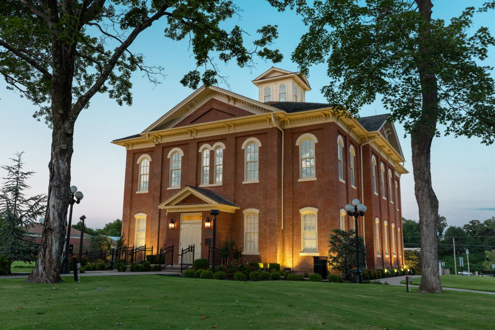

Monthly
General Meeting
Our whole membership gathers once a month to hear from local candidates and officials, plan upcoming actions, and vote on where YDT gets involved next. First Thursday of every month, open to anyone ages 14–35.

Cherokee County · Ages 14–35
Young Democrats of Tahlequah trains, organizes, and mobilizes the next generation of Cherokee County leaders — at the county courthouse, at the city council podium, and on doors across town.
Why We Organize
Most people don't start paying attention to local government until it's already affecting them. We think ages 14–35 is exactly the right time to learn how a county commission meeting works, who your state rep is, and how a school board vote gets decided — before it's your name on the ballot.
We break down how city council, the county commission, and the state legislature actually work — no civics-class jargon, just what it means for Tahlequah. Know the process, and you can't be talked out of using it.
Voter registration tables at NSU, canvassing blocks in Tahlequah and across Cherokee County, phone banks the week before an election — we do the unglamorous work that actually turns out votes.
Every officer role, committee chair, and event lead in YDT is held by a young person. You don't wait ten years to have a title here — you run the meeting, chair the committee, and build the résumé along the way.
Get Involved
No dues, no long application, no prior experience required. Come to one meeting and you're a member.
Monthly
Our whole membership gathers once a month to hear from local candidates and officials, plan upcoming actions, and vote on where YDT gets involved next. First Thursday of every month, open to anyone ages 14–35.
Ongoing
Pick a lane: Voter Outreach, Communications, or Community Events. Committees meet on their own schedule and do the steady work between general meetings — from canvass planning to running our social channels.
Annual
Every spring, members elect a new slate of chapter officers — President, Vice President, Secretary, and Treasurer. Any member in good standing can run. Leadership here turns over on purpose.